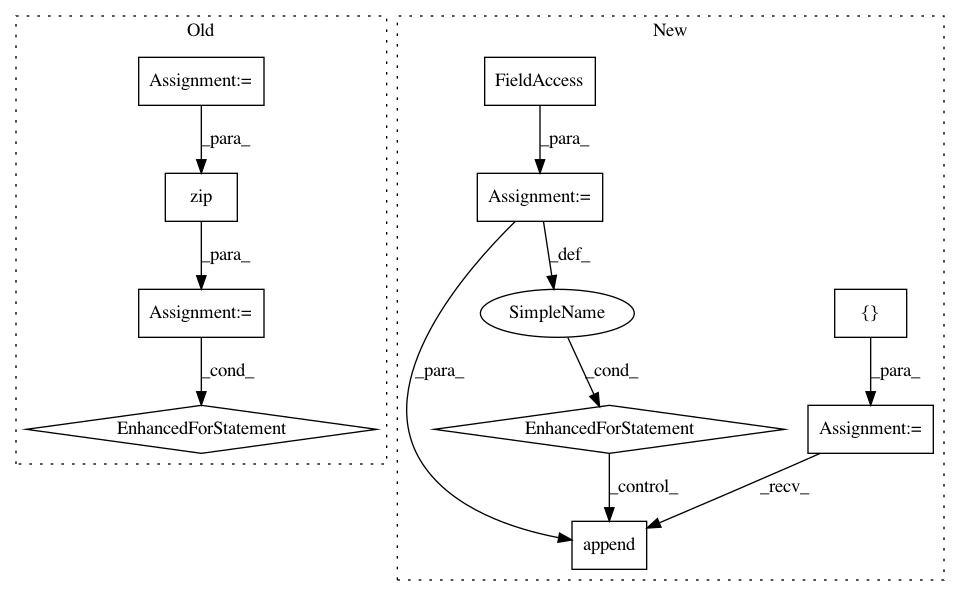

56853f351b13e6c806902b02d5ca23e8836028af,estnltk/estner/crfsuiteutil.py,Tagger,tag,#Tagger#Any#,103
Before Change
list of JSON-style documents/corpora.
"""
nerdocs = self.extract_features(docs)
for nerdoc, vabadoc in zip(nerdocs, docs):
vabadoc = self._tag_doc(nerdoc, vabadoc)
return docs
def _tag_doc(self, nerdoc, vabadoc):
labels = []
After Change
Predicted token Labels for each sentence in the document
"""
labels = []
for snt in nerdoc.snts:
xseq = [t.feature_list() for t in snt]
yseq = self.tagger.tag(xseq)
labels.append(yseq)
return labels
In pattern: SUPERPATTERN
Frequency: 3
Non-data size: 10
Instances
Project Name: estnltk/estnltk
Commit Name: 56853f351b13e6c806902b02d5ca23e8836028af
Time: 2014-12-16
Author: alex.tk.fb@gmail.com
File Name: estnltk/estner/crfsuiteutil.py
Class Name: Tagger
Method Name: tag
Project Name: fmfn/BayesianOptimization
Commit Name: ad5cab5a112c1f0cc25827f902ab26ad2b25f238
Time: 2017-03-12
Author: aman.bhatia@outlook.com
File Name: bayes_opt/bayesian_optimization.py
Class Name: BayesianOptimization
Method Name: initialize
Project Name: Netflix/vmaf
Commit Name: 849930b25fb7e6dac5f1a5cc6e7d14580faf668d
Time: 2016-02-16
Author: zli@netflix.com
File Name: python/vmaf_quality_runner.py
Class Name: VmafQualityRunner
Method Name: _run_on_asset